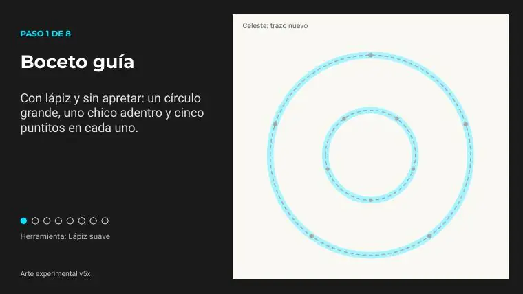
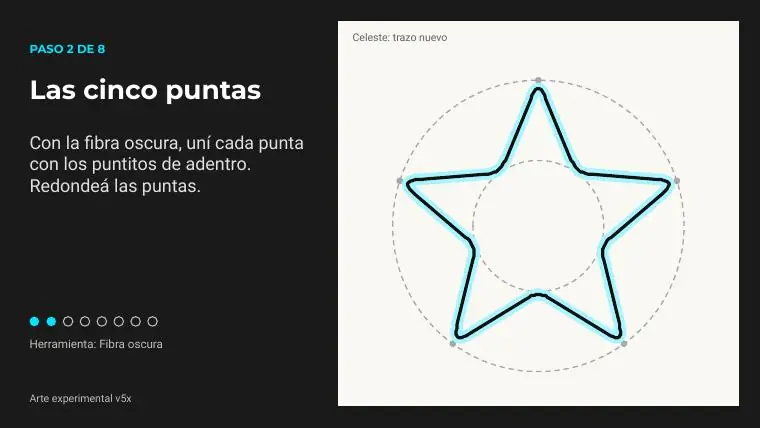
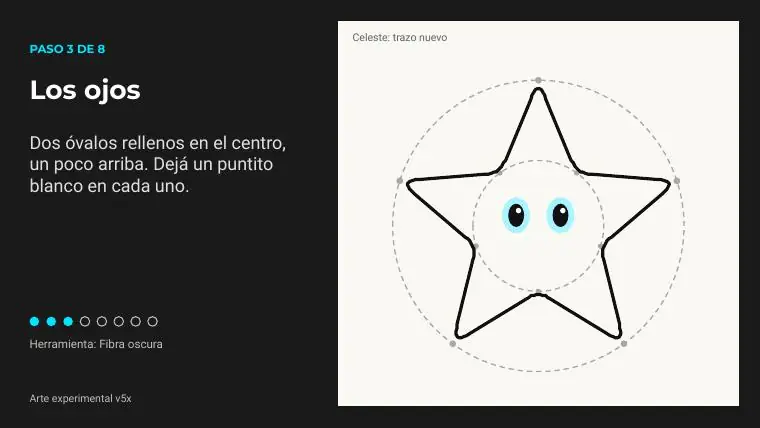
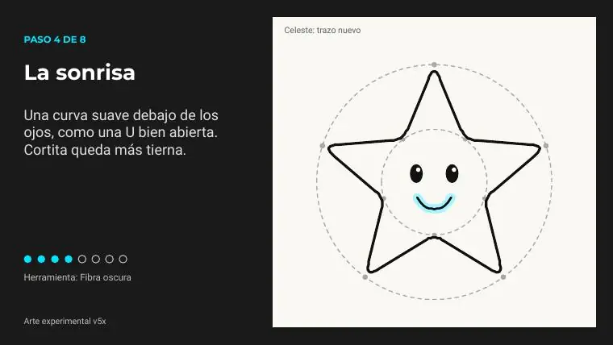
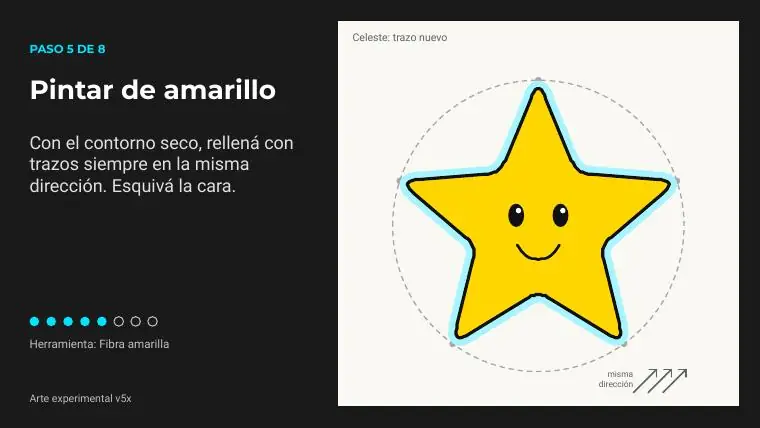
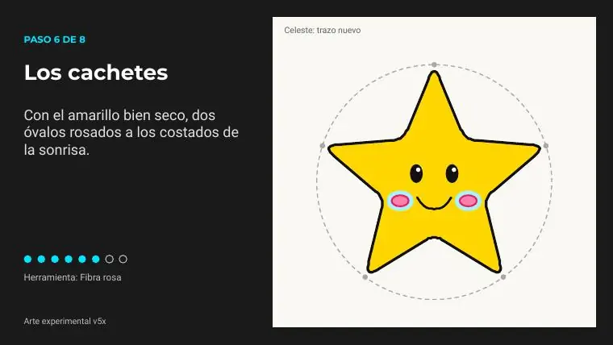
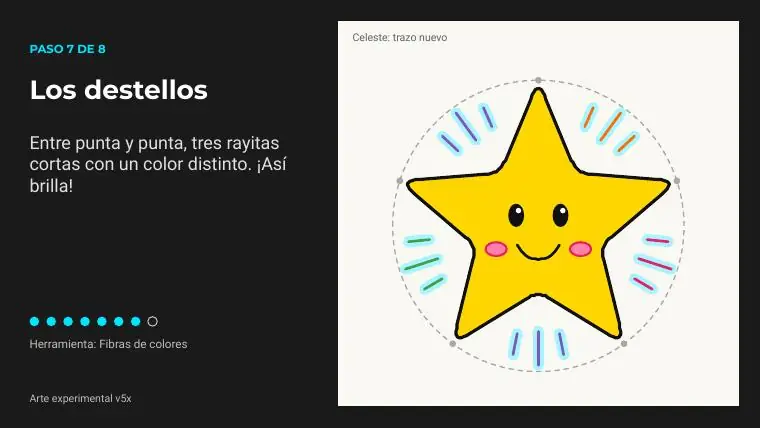
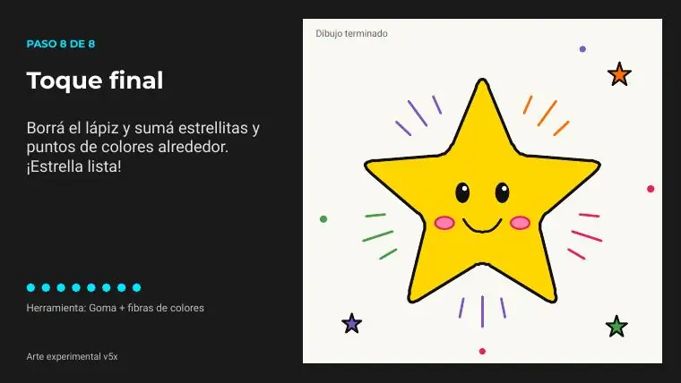

Tutoriales › Cómo dibujar una estrella con fibras

Tutorial 03 · Video publicado
Cómo dibujar una estrella con fibras
Dibujo paso a paso con 8 bloques de pasos explicados abajo. Mirá el video, descargá las diapositivas en PDF (12 páginas) y practicá a tu ritmo.
Video
Materiales
- Fibra oscura
- Fibras de colores
- Para el contorno, los ojos y la sonrisa
- Una fibra oscura para el contorno y la cara, y fibras de colores vivos para pintar. Con cinco colores alcanza.
- Amarilla, rosa y tres para los destellos
- Opcional
- Hoja lisa, mejor gruesa (la fina se humedece)
- Lápiz y goma para un boceto suave
Paso a paso

Paso 1 de 8 · Boceto guía
Con lápiz y sin apretar: un círculo grande, uno chico adentro y cinco puntitos en cada uno.
Herramienta: Lápiz suave

Paso 2 de 8 · Las cinco puntas
Con la fibra oscura, uní cada punta con los puntitos de adentro. Redondeá las puntas.
Herramienta: Fibra oscura

Paso 3 de 8 · Los ojos
Dos óvalos rellenos en el centro, un poco arriba. Dejá un puntito blanco en cada uno.
Herramienta: Fibra oscura

Paso 4 de 8 · La sonrisa
Una curva suave debajo de los ojos, como una U bien abierta. Cortita queda más tierna.
Herramienta: Fibra oscura

Paso 5 de 8 · Pintar de amarillo
Con el contorno seco, rellená con trazos siempre en la misma dirección. Esquivá la cara.
Herramienta: Fibra amarilla

Paso 6 de 8 · Los cachetes
Con el amarillo bien seco, dos óvalos rosados a los costados de la sonrisa.
Herramienta: Fibra rosa

Paso 7 de 8 · Los destellos
Entre punta y punta, tres rayitas cortas con un color distinto. ¡Así brilla!
Herramienta: Fibras de colores

Paso 8 de 8 · Toque final
Borrá el lápiz y sumá estrellitas y puntos de colores alrededor. ¡Estrella lista!
Herramienta: Goma + fibras de colores
Consejos
- Esperá que seque un color antes de pintar al lado o encima.
- Trazos para el mismo lado. Ir y venir raya y gasta el papel.
- Lo que nadie te avisa la primera vez que pintás con fibras, y cómo evitarlo.
- Tapá las fibras
- Cerralas apenas las dejás: destapadas se secan rápido.
- ¿Se ensució la amarilla? Pasala en otro papel hasta que salga limpia.
Las imágenes de los pasos son páginas del PDF del tutorial (material propio del canal). Licencia: uso personal libre; no reventa.